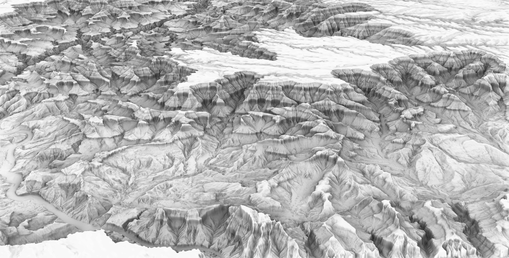

Ibex
[2020]
Ibex is a terrain modeling plug-in for Grasshopper that creates Rhino meshes from ArcGIS digital elevation models. Free to download at Food4Rhino.

Rendering of the Grand Canyon, perspective view.

Rendering of the Grand Canyon, orthographic view.

Ibex outputs, from left to right: base terrain model, terrain model with elevation color ramp
applied, terrain model with orthoimagery applied.
Ibex Grasshopper icons, from top-left, clockwise: Import Terrain, Project Buildings to Terrain,
Apply Orthoimagery, Export Terrain.

Ibex logo (Credit: Hannah Van der Eb).